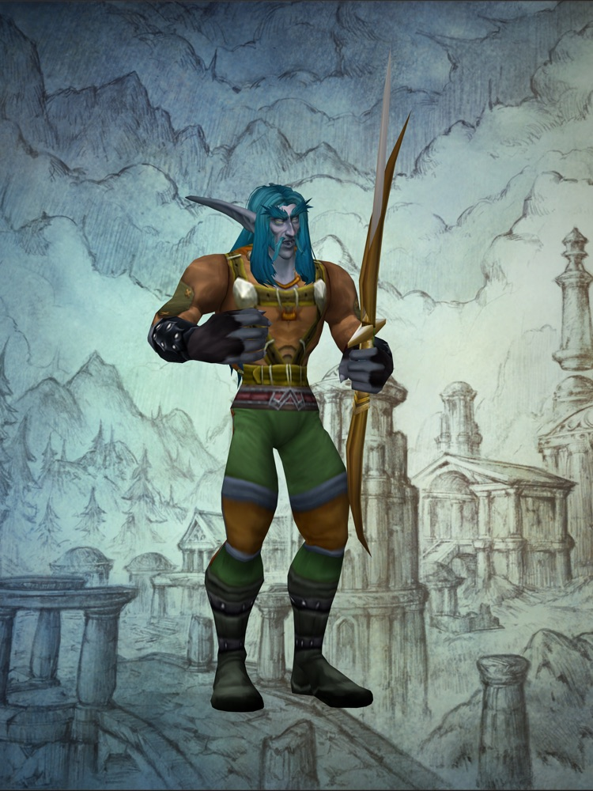

What the podcasts are saying
Twenty-two episodes on twelve shows in the three weeks since BlizzCon. We went through every one: the show notes, the write-ups and the parts quoted on the record. Here's where they agree, where they argue, and what's missing from the conversation.
Twenty-two episodes, and nearly all of them inside the hobby
Since Blizzard announced World of Warcraft: Forever at BlizzCon on September 12, we've found 22 podcast episodes about it on 12 different shows. Every one is linked on our podcasts page. Some are four-hour deep dives. Some give it twenty minutes between other news.
Almost all of them are Warcraft shows or MMO shows. The only general gaming podcast we could confirm talking about it is the Giant Bombcast, about an hour and forty minutes into a show that was mostly about other things. We looked for episodes on the big tech, culture and business podcasts, from The Vergecast and Decoder to Hard Fork, NPR, Bloomberg and The Ringer, and found none.
That's surprising. Blizzard is making Forever a permanent version of WoW, alongside the modern game and Classic, and Azeroth Morning Radio reports the beta crowds are big enough that Blizzard keeps adding capacity. For now, though, people who play WoW are the only ones talking about it. That may change on November 4.
Blizzard's podcast is hosted by the biggest independent one
The most important show on the list belongs to Blizzard. World of Warcraft: Forever, the official podcast, started in September. Josh Corbett of Countdown To Classic hosts it, with Blizzard designers on every episode and a big streamer as guest: Xaryu in the first, Sodapoppin in the second.
It's worth listening to. In the first episode Blizzard put its own beta data on the record for the first time: levels 1 to 20 are slower in Forever than in Classic Era, and some early blue quest rewards are being pulled back. The second is the designers explaining their class changes in their own words.
Hosting it is a coup for Countdown To Classic, and it's easy to see why Blizzard asked: nobody independent has a bigger Classic audience. But it does mean the loudest independent voice on Forever now hosts the official show too, and his own show's latest episode reacts to an episode of the official one. That isn't a scandal, but it's worth knowing. Listen to both, and notice which one speaks more freely.
Is it still Classic?
This question runs through almost every episode. Azeroth United asks it outright: 'does WoW Forever still feel like Classic?' It's a fair question. The world and the level cap of 60 are the original ones, but Blizzard has added new zones, nine new dungeons, reworked talents, new race and class combinations, a new race, transmog and smaller raids.
Blizzard's own answer, from game director Ion Hazzikostas in a BlizzCon interview with Warcraft Tavern, is that it's 'still the Classic assets, it's still the setting. But, boy, is the vibe just massively enhanced.' Lead classic designer Tim Jones put it more simply: 'The world is the main character.'
If you want the before and after, Warcraft Brew spent the summer surveying fans on what Classic+ should be, then recorded their first beta impressions on September 21. Azeroth Morning Radio's 'What is Warcraft Forever?', recorded four days before the reveal, is a time capsule of what people expected.
Slower and harder, and most of them like it
The surprise of the beta's first weeks is that most of the shows seem to welcome how slow it is. Blizzard's numbers say early levelling takes longer than in Classic Era, and the designers want gear to climb from white to green to blue at the old pace. Azeroth Morning Radio asks whether that slower, more dangerous open world will end up changing modern WoW as well.
The classes are where it gets heated. Countdown To Classic spent a long stretch of 'The Dulltimate Warrior' arguing that the warrior still feels dull. When the designers explained their thinking on the official podcast, one forum thread called it the 'best interaction between fans and devs I have ever seen', while other players complained of a 'simple and stupid' design that removes 'fun, niche options'.
Does the beta spoil launch day?
The Blizzard Watch Podcast's 600th episode was recorded live while Liz Harper played the beta, and the crew split on it. Liz thinks playing early wears the shine off launch; Joe doesn't mind at all.
It matters more than it sounds, because beta access is one of the things money buys. The Epic Pack includes it. The beta ends on October 21, and fan sites expect beta characters to be wiped, so for most players the first real character is the one they make on November 4.
The race you pay for
The Skyborne, Forever's new elf race, aren't part of the game your subscription gets you. They come in the paid Heroic Pack. Lore Watch, Blizzard Watch's lore show, goes at it from the story side and asks whether the Skyborne have enough history behind them to earn a place among the original races.
Blizzard's line on the rest of the money question, from Clay Stone, is that there's no WoW Token and no paid boosts at launch, and no plans for them: 'You get better at the game by playing the game.'
What we left out
The beta's loudest news story this month has been about gold buying and a few big streamers. Countdown To Classic's 'Can't Buy Me Gold' covers it if you want it. We stay out of stories that are about people rather than the game, so it isn't part of this piece.
What nobody can answer yet
- Will the general and mainstream shows pick Forever up at launch, or does it stay a Warcraft story?
- Hardcore realms are coming 'later'. Blizzard hasn't given a date.
- Native gamepad support has the shows talking about a console version. Blizzard hasn't said anything.
- Blizzard has surveyed players about possible new classes. Nobody knows whether any will come.
- Will the class changes the shows are arguing about survive the last two weeks of beta?
World of Warcraft: Forever is a new, permanent version of WoW that goes back to the game as it was around 2004, with new zones, dungeons and changes on top. A podcast is a good way to get up to speed before launch on November 4: start with the official podcast's first episode for what Blizzard is aiming at, then Azeroth United's 'The Good, The Bad & The Ugly' for an honest list of what players think.
The episodes in this piece
Every show- Warcraft showsCan't Buy Me GoldCountdown To Classic · Josh Corbett and crew · around October 5, 2026 · 3 h 22 min
The week's beta stories, and the crew's reaction to Blizzard's class-design episode of the official podcast, which Josh also hosts.
Why listen: Hear the official podcast's host talk about it off the official record.
- Warcraft showsEpisode 2: Speed Running Classes ft. SodapoppinWorld of Warcraft: Forever, the official podcast · Countdown To Classic with Sodapoppin and Blizzard designers Josh Greenfield, Aidan Moon and Kris Zierhut · October 1, 2026 · 1 h 18 min
Blizzard's designers explain the thinking behind Forever's class changes.
Why listen: The design reasoning straight from the people who made it. The forum reaction split hard, from praise to calls of 'simple and stupid'.
Also on Warcraft Tavern write-up - Warcraft showsEp. 53: Is Warcraft: Forever Changing the Future of World of Warcraft?Azeroth Morning Radio · Jibbs and Kash · September 29, 2026
Whether Forever's dangerous, slower open world will pull modern WoW in the same direction.
Why listen: The big-picture question: what Forever means for the rest of WoW.
- Warcraft showsThe Dulltimate WarriorCountdown To Classic · Josh Corbett, with Marrow · September 28, 2026 · 3 h 45 min
Week-one beta impressions, then a long argument that the warrior, rage and all, feels dull.
Why listen: The fullest version of the 'did the class changes go too far, or not far enough' debate.
- Warcraft shows#600: The episode where Cory says I told you soBlizzard Watch Podcast · Liz Harper and Joe, with Cory, Liz Patt and Mitch · September 25, 2026 · 1 h 08 min
Recorded live while Liz played the beta. The crew argue whether playing the beta wears the shine off launch day: Liz says it does, Joe doesn't mind.
Why listen: A question worth asking when beta access comes with a paid pack.
- Warcraft showsEpisode 1: Unpacking Beta Launch ft. XaryuWorld of Warcraft: Forever, the official podcast · Countdown To Classic with Josh Greenfield, lead classic designer Tim Jones and Xaryu · September 24, 2026 · 1 h 02 min
Blizzard's own beta data: levels 1 to 20 are slower than in Classic Era, some early blue quest rewards are being pulled back to keep the white, green, blue climb, and layering bugs are still being fixed.
Why listen: The first time Blizzard put beta numbers on the record.
Also on Blizzard's post - Warcraft showsEp. 155: WoW Forever: The Good, The Bad & The UglyAzeroth United · Denethar · September 23, 2026 · 1 h 38 min
A structured run through levelling, quests, dungeons, talents, professions, graphics, the realmless servers, class changes and the money side, ending on 'does WoW Forever still feel like Classic?'
Why listen: The tidiest pros-and-cons episode, and it asks the authenticity question outright.
Also on Spotify - Warcraft showsThe never-ending faction war in World of Warcraft: ForeverLore Watch (Blizzard Watch) · Joe, Matt and Eric · September 23, 2026
Alliance against Horde in Forever's story, and whether the Skyborne have enough lore behind them to earn a place.
Why listen: The lore side of the new-race argument.
- Warcraft showsWoW Forever Beta: Our Honest First ImpressionsWarcraft Brew · Quissy and Pastaface · September 21, 2026 · 1 h 39 min
The reveal and the beta: the Skyborne, quests, dungeons, professions, class changes, character models, layering, gear and shared mob tagging.
Why listen: Their summer episodes surveyed fans on what Classic+ should be, so you can hear the wish list and the reality side by side.
- Gaming shows958: Eye PushupsGiant Bombcast · Giant Bomb crew · September 15, 2026 · 2 h 42 min
Mikey reports back from BlizzCon, about 1:42:06 in: StarCraft is a shooter, Diablo V is coming, and WoW goes Forever.
Why listen: The one general gaming show we could confirm talking about Forever.
- Warcraft showsWhat is Warcraft Forever?Azeroth Morning Radio · Jibbs and Kash · September 8, 2026 · 1 h 15 min
Recorded before the reveal: what Project Camelot and 'Warcraft Forever' might turn out to be.
Why listen: A time capsule. Compare what fans expected with what Blizzard announced four days later.
Also on Spotify
